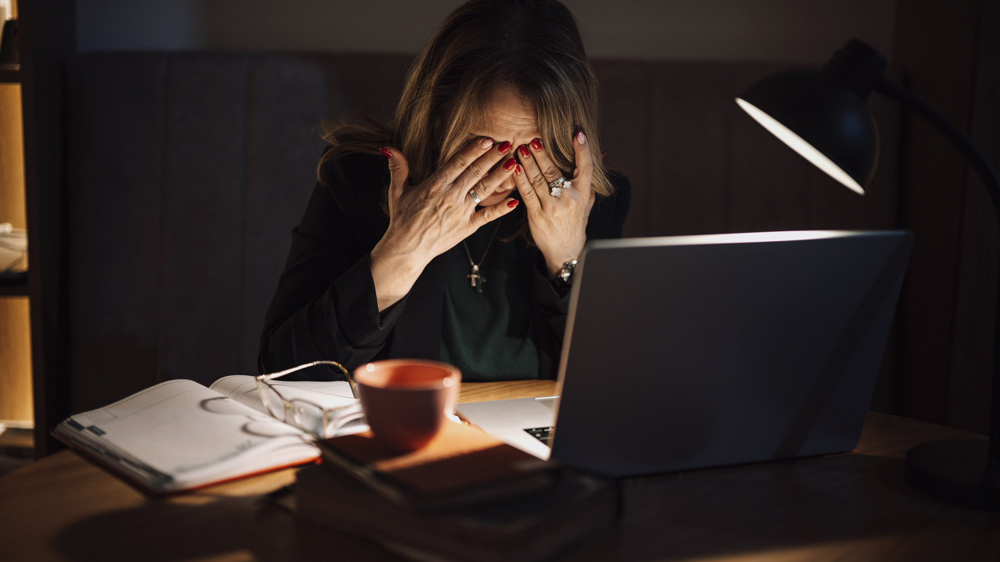

REDAKSJONELT UTKAST – IKKE PUBLISERT
Arbeidsliv · Utkast opprettet 30. oktober 2026
Én av seks oppgir å stå utenfor de vanlige arbeidstidsreglene
En ny rapport fra OsloMet-AFI viser at 16 prosent av arbeidstakerne oppgir å være unntatt de ordinære arbeidstidsreglene. Flere jobber lengre dager, og mange opplever selv ansvaret for at belastningen er forsvarlig.

Hvor selvstendig er en «særlig uavhengig» stilling?
Arbeidstidsreglene skal blant annet bidra til at arbeidstakere får nødvendig hvile og at belastningen ikke blir uforsvarlig. Men reglene har unntak for personer i ledende eller særlig uavhengige stillinger. En ny rapport fra Arbeidsforskningsinstituttet ved OsloMet (AFI) undersøker hvor mange disse unntakene gjelder, og hvordan ordningene virker.
Rapporten, som er laget på oppdrag fra Arbeids- og inkluderingsdepartementet, viser at 16 prosent av de spurte arbeidstakerne oppgir å være unntatt de ordinære arbeidstidsreglene. Andelen har økt siden 2013. Ifølge departementet bygger rapporten på spørreundersøkelser blant 4 475 arbeidstakere og 1 238 ledere med personalansvar, intervjuer med 22 personer og en ny analyse av en hjemmekontorundersøkelse fra 2022. Tallet på 16 prosent bygger på selvrapportering, ikke en individuell juridisk kontroll av om unntakene brukes korrekt.
To ulike typer unntak
Nær åtte prosent oppgir unntak fordi de har en ledende stilling, mens nær ni prosent viser til en særlig uavhengig stilling. Tallene er avrundede og skal ikke nødvendigvis summeres til nøyaktig 16,0 prosent.
Ledende stillinger finnes blant annet i hotell- og restaurantbransjen, varehandel og medier. Unntaket for særlig uavhengige stillinger forekommer ofte innen forskning, sosiale tjenester, telekom, IT og kulturfeltet. Rapporten viser også at ordningene er vanligere blant menn enn blant kvinner, og mer utbredt i privat enn offentlig sektor.
Mer arbeidstid – og mer ansvar
Ansatte i ledende stillinger oppgir i gjennomsnitt 45,4 arbeidstimer i uken. For ansatte i særlig uavhengige stillinger er gjennomsnittet 40,4 timer. Tallene beskriver grupper, ikke nødvendigvis hver enkelt arbeidstaker.
En interessant del av rapporten er at de særlig uavhengige oppgir mindre selvstendighet enn tilsvarende grupper i undersøkelser fra 2013 og 2014. Det reiser spørsmål om grensene mellom frihet til å organisere eget arbeid og forventninger om å være tilgjengelig også utenfor vanlig arbeidstid.
Departementet opplyser at bare litt over halvparten av lederne med personalansvar sier at virksomheten deres har rutiner for å sikre forsvarlig arbeidstid for disse ansatte. Mange arbeidstakere mener selv at de bærer ansvaret, selv når de er i tett kontakt med nærmeste leder.
Unntak er ikke det samme som fravær av vern
Unntakene for ledende og særlig uavhengige stillinger står i arbeidsmiljøloven § 10-12 første og andre ledd. Ifølge Arbeidstilsynet skal det mye til for at vilkårene er oppfylt. Det er arbeidstakerens faktiske oppgaver, ansvar og mulighet til å styre egen arbeidstid som avgjør – ikke stillingstittelen eller at vedkommende har fleksitid.
Selv når unntaket er lovlig, har arbeidsgiveren plikt til å sørge for forsvarlig arbeidstid og vurdere belastningen på helse og sikkerhet. Dersom det er tvil om stillingen faktisk er ledende eller særlig uavhengig, er utgangspunktet at de alminnelige arbeidstidsreglene gjelder. Arbeidstilsynet understreker også at feil klassifisering kan medføre rett til overtidsbetaling.
Rapporten alene viser ikke at 16 prosent er feilklassifisert, eller at et bestemt antall arbeidsgivere bryter loven. Den sier noe om hvor mange som oppgir å være omfattet av unntakene. Det juridiske spørsmålet i den enkelte virksomheten må undersøkes separat.
Hva skjer videre?
Arbeids- og inkluderingsdepartementet bestilte rapporten for å få bedre kunnskap om behovet for vern. Neste spørsmål er hvilke vurderinger myndighetene, arbeidslivets parter og virksomhetene gjør på bakgrunn av funnene.
For arbeidstakere som lurer på om egen stilling er korrekt klassifisert, er det ikke tilstrekkelig å sammenligne tittelen på stillingen med en liste over yrker. Oppgavene og graden av selvstendighet må vurderes konkret. Denne artikkelen gir bakgrunn for debatten, men er ikke en juridisk avgjørelse i enkeltsaker.